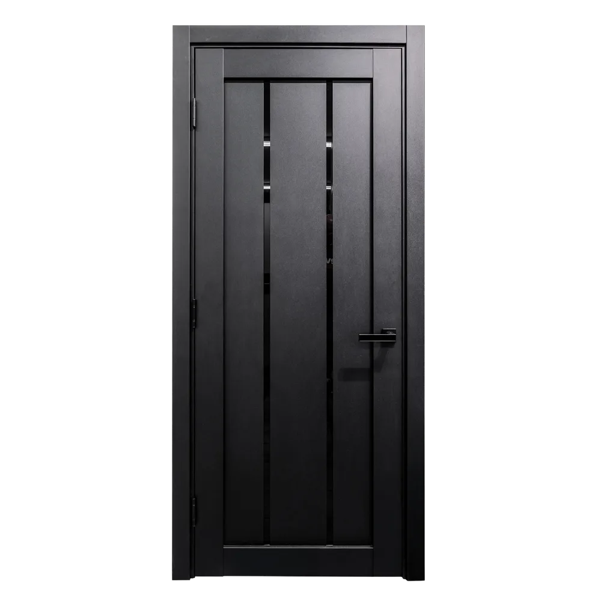
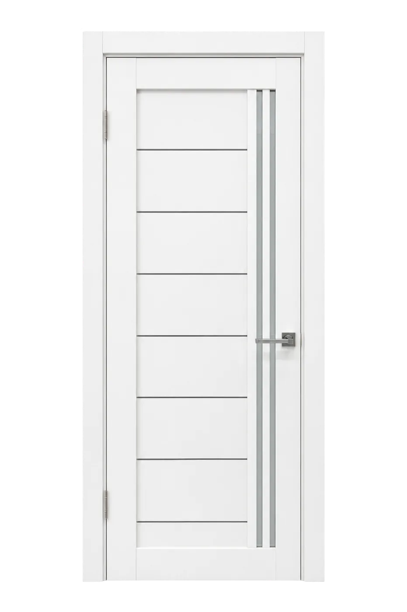
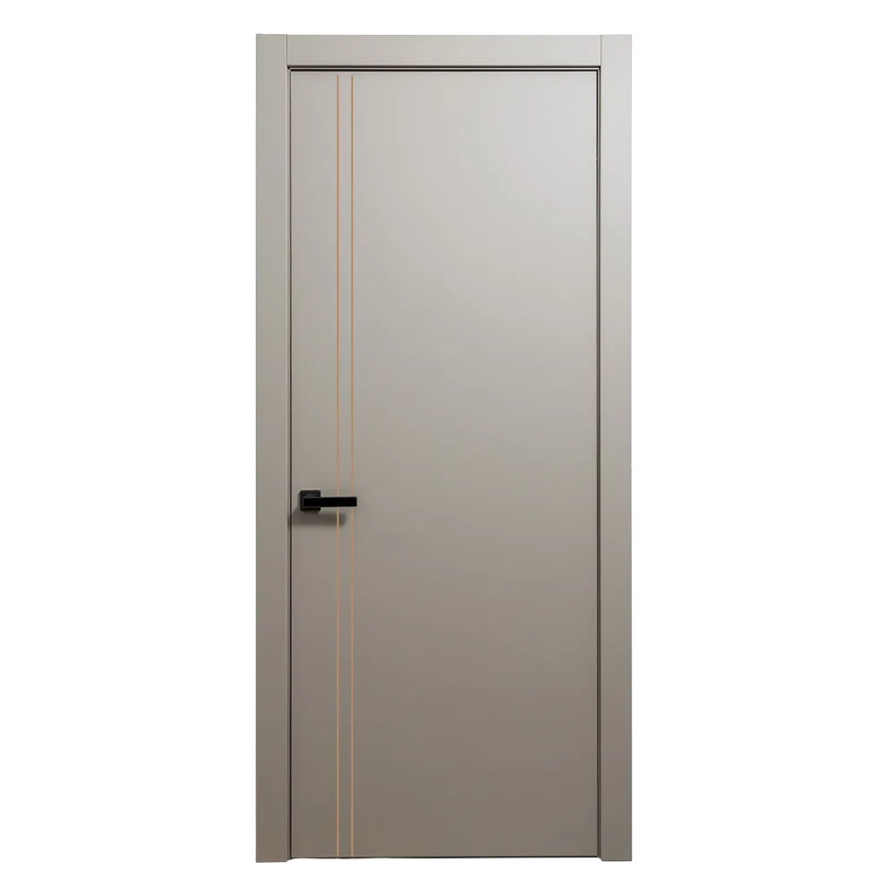
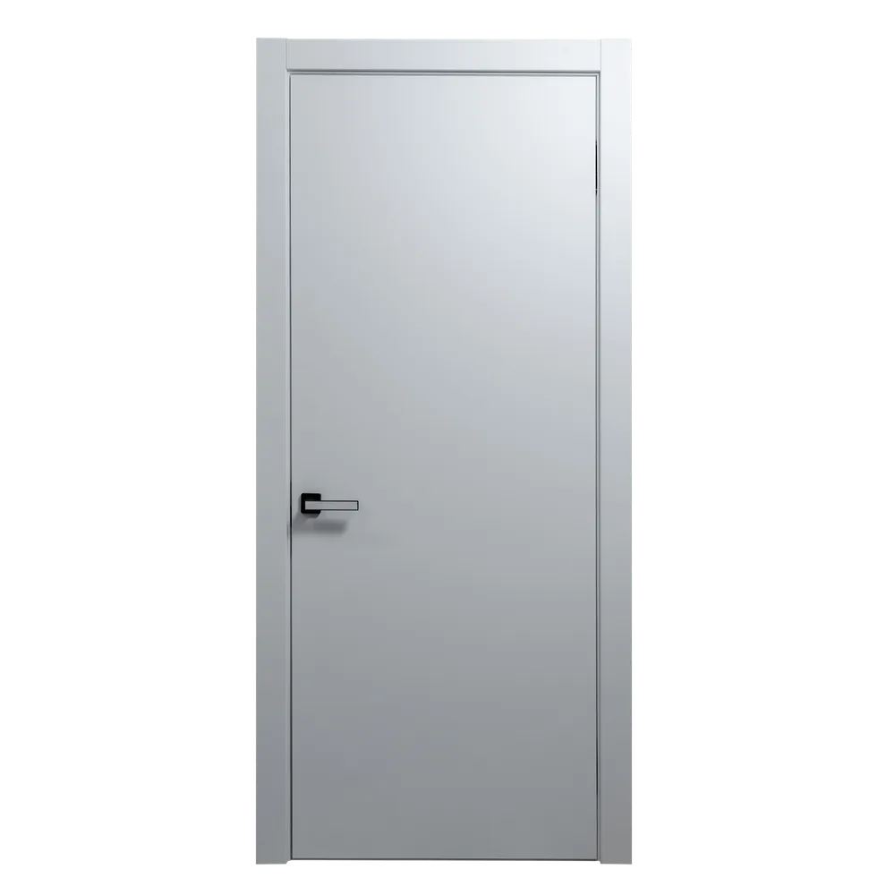
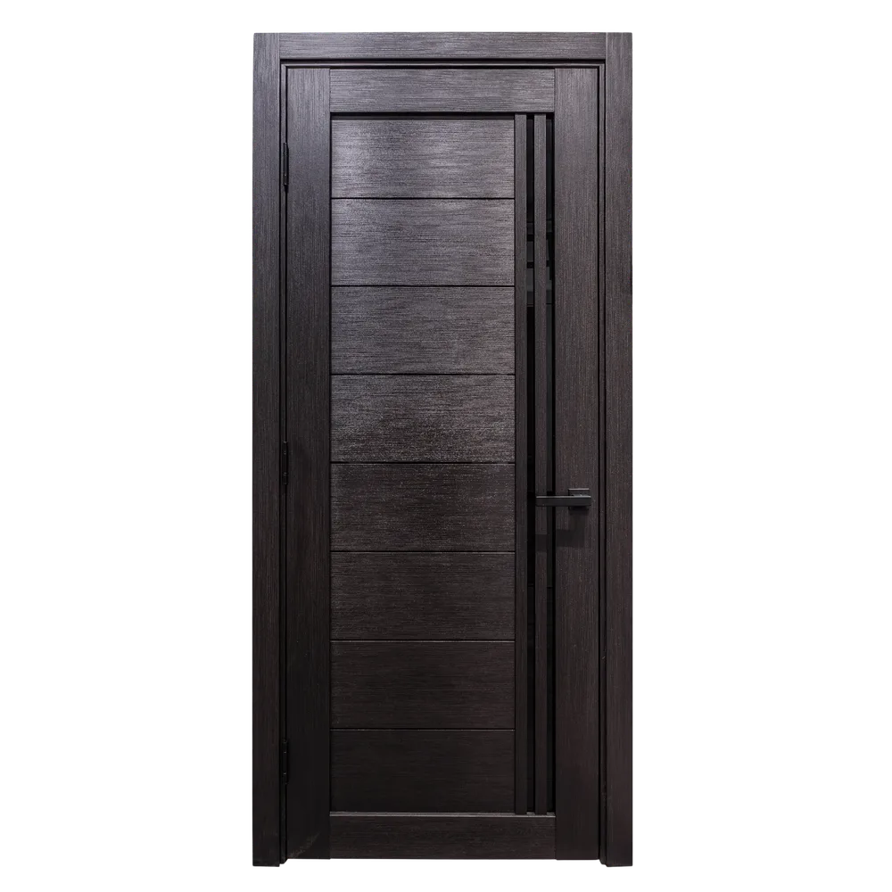
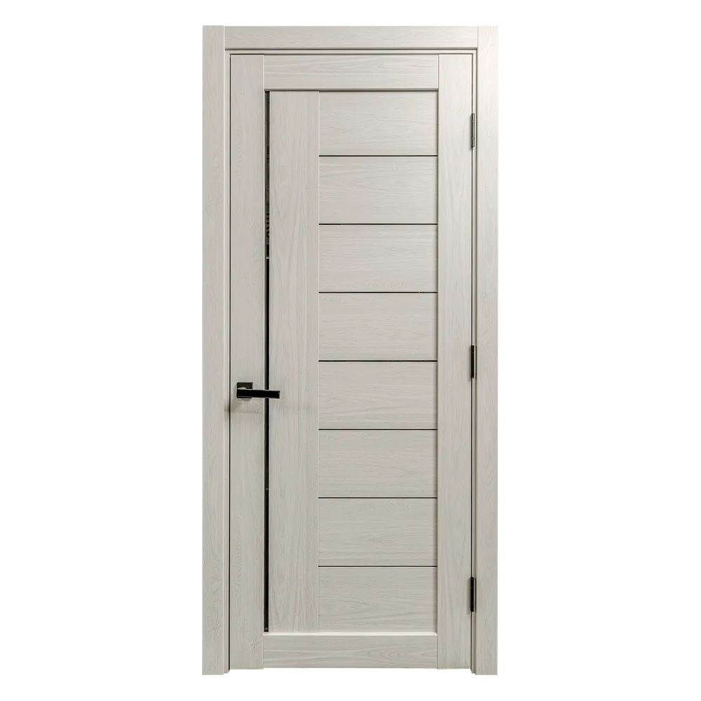

For homeowners
Clear product options, finish samples, and estimate support for single-room updates or whole-home door packages.
 Doors Gallery
Doors GalleryAbout Doors Gallery
European-style doors, frameless profiles, custom finishes, and premium hardware for homes, offices, builders, and designers.

Our approach
Modern doors should do more than fill an opening. They set the rhythm of a room, align with trim and hardware, and make everyday spaces feel intentionally designed.
Our collection focuses on European-inspired profiles, flush looks, hidden hinge systems, magnetic locks, durable finishes, and custom sizing for new builds and renovations.
Clear product options, finish samples, and estimate support for single-room updates or whole-home door packages.
Clean doors for private offices, meeting rooms, storage, and high-traffic commercial interiors.
Project-friendly quoting, availability checks, delivery coordination, and installation options.
Modern interior doors
Doors Gallery brings together modern European interior doors, custom door systems, frameless designs, and premium hardware in one clean showroom experience. Our goal is simple: help every project feel more refined, better proportioned, and easier to finish.
Whether you are updating a single room, planning a full home renovation, furnishing a commercial office, or sourcing doors for a builder package, we help you compare finishes, models, sizes, glass details, hardware, and installation-ready sets with clarity.

European style
Our European-style door collections are designed around balanced proportions, smooth finishes, and architectural details that work with contemporary interiors. From matte black and white finishes to warm oak, wenge, concrete textures, and soft neutral tones, each door is chosen to complement modern living.
We focus on doors that look polished from every angle: door slab, jamb, casing, extensions, hinges, magnetic lock, and handle options all work together as a complete package.
Door selection
The LV collection includes European-inspired interior doors with glass accents, matte finishes, concrete textures, wood tones, and refined panel layouts. These doors are a strong fit for bedrooms, hallways, offices, and living spaces where a modern detail makes the room feel complete.
Frameless doors create a cleaner architectural reveal with a flush, minimal look. They are ideal for interiors where the door should feel integrated into the wall, with premium finishes such as Black Shagreen, Beige Concrete, Anthracite Concrete, and Golden Oak.
The YL collection supports custom door solutions for projects that need specific proportions, finish direction, and hardware details. With 80 inch and 96 inch height options, the collection gives designers and homeowners a more tailored path.

Hardware
The right hardware changes how a door feels every day. Doors Gallery offers European magnetic locks, hinges, privacy or keyed options, and more than 15 handle styles so each door can match the look and function of the room.
Our team can help pair finishes like black, brushed metal, gold, and neutral tones with the right door face, casing, and lock option.
Custom solutions
Every project has its own constraints. Some need fast in-stock options, while others need custom height, custom width, matching trim, or a full set of doors for a builder schedule. We help organize those details before the order is placed.
From measuring guidance to delivery and installation coordination, our process is designed to make premium doors easier to specify and easier to live with.
Why choose Doors Gallery
Gallery






Start your project
Explore the full collection or send your model, quantity, opening sizes, and project timeline for an estimate.